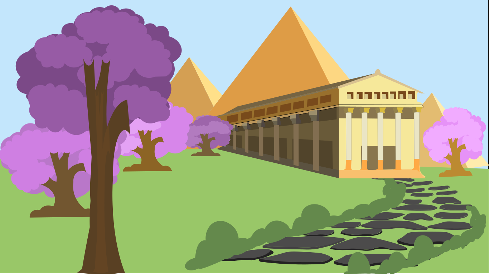

En un pasado lejano, las piramides colosales se alzaban hacia el cielo, templos sagrados y obeliscos se elevaban como lanzas hacia los dioses pero el tiempo paso, y el nilo cambio su curso, las arenas del desierto sepultarón las piramides, los templos se derrumbarón y los obeliscos se desvanecierón en la historia. y sin enmbargo, en un lugar lejano, un nuevo valle se desperto el río medellin, como un nilo renovado, fluyo con vida y energia a través de la ciudad, los edificios se alzarón como nuevas piramides, los parques y jardines se convirtierón en templos de la naturaleza, la arquitectura antigua se fusionó con la moderna, creando un paisaje urbano único y en este lugar, un faraón perdido busca a su hermana.